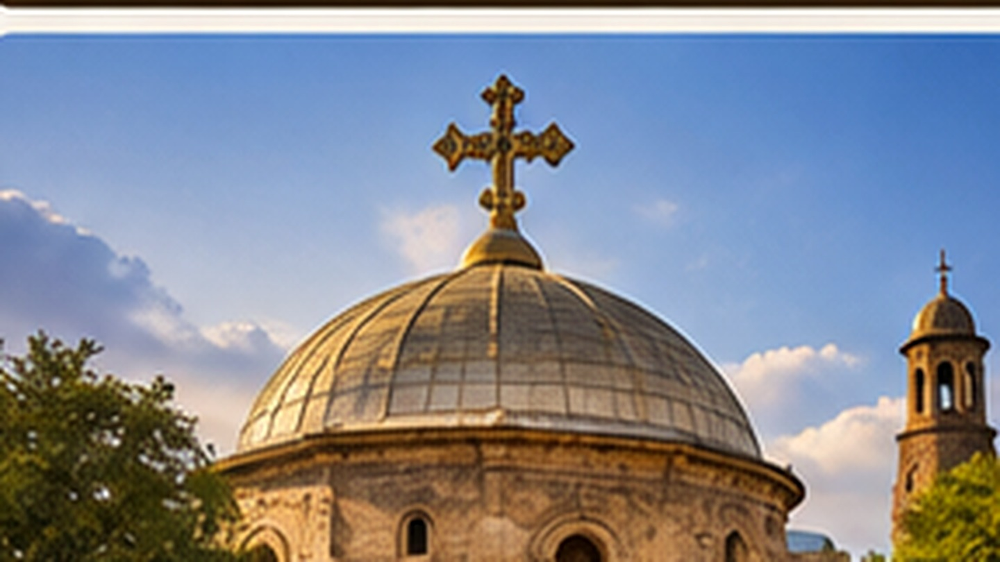

01
Kleidung beachten
Für Kirchen und Klöster angemessene, eher bedeckende Kleidung wählen.
Religiöse Orte und Feste gehören zu den eindrucksvollsten Reiseerlebnissen Äthiopiens. Ein respektvoller Besuch beginnt mit passenden Regeln und Aufmerksamkeit.

Übersichtlich, praktisch und auf die Reisevorbereitung ausgerichtet.
Für Kirchen und Klöster angemessene, eher bedeckende Kleidung wählen.
Hinweise zu Schuhen, Zugängen oder getrennten Bereichen vor Ort beachten.
Vor Aufnahmen in religiösen Räumen und von Menschen nachfragen.
Religiöse Feiertage können Tagesabläufe und Besuchsmöglichkeiten verändern.
Religiöse Orte und Feste gehören zu den eindrucksvollsten Reiseerlebnissen Äthiopiens. Ein respektvoller Besuch beginnt mit passenden Regeln und Aufmerksamkeit.
Ein sinnvoller Ablauf hilft, wichtige Punkte rechtzeitig zu erledigen.
Kleider- und Verhaltensregeln kurz klären.
Abstand halten und religiöse Handlungen respektieren.
Vor Bildern von Personen oder Zeremonien immer nachfragen.
Wir planen Besuche so, dass genügend Zeit für Geschichte, Architektur und lokale Tradition bleibt.